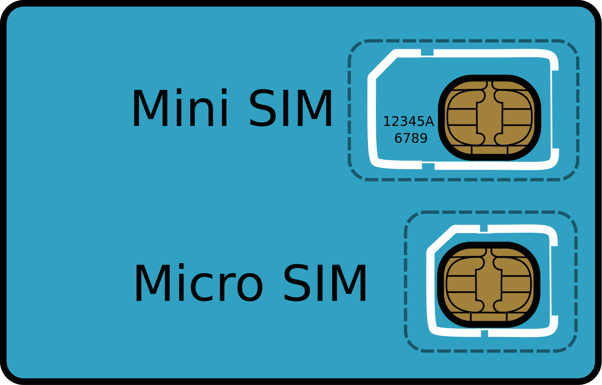

Avantaje
Rețelele mobile celulare GSM oferă o serie de avantaje față de alte soluții tehnice:
● capacitate de transmisie sporită
● consum redus de energie
● acoperire geografică extensivă
● interferențe reduse cu alte semnale
● toleranță la greșeli de transmisie sau defecțiuni
● latență redusă și stabilitate.
Evoluția GSM
Inițial GSM a fost conceput doar pentru telefonie și transmitere de telefaxuri și alte date la viteză constantă. Succesul Internetului a condus însă și la evoluția standardelor GSM, care azi permit, printre altele, accesul mobil la Internet cu viteze mari. Pentru aceasta, în decursul timpului au fost implementate mai multe standarde GSM, unele dintre ele pentru scopuri speciale: CSD, HSCSD, GPRS, EDGE, UMTS, HSPA, Streaming, Generic Access, Cell Broadcast, BOS-GSM, LTE.
